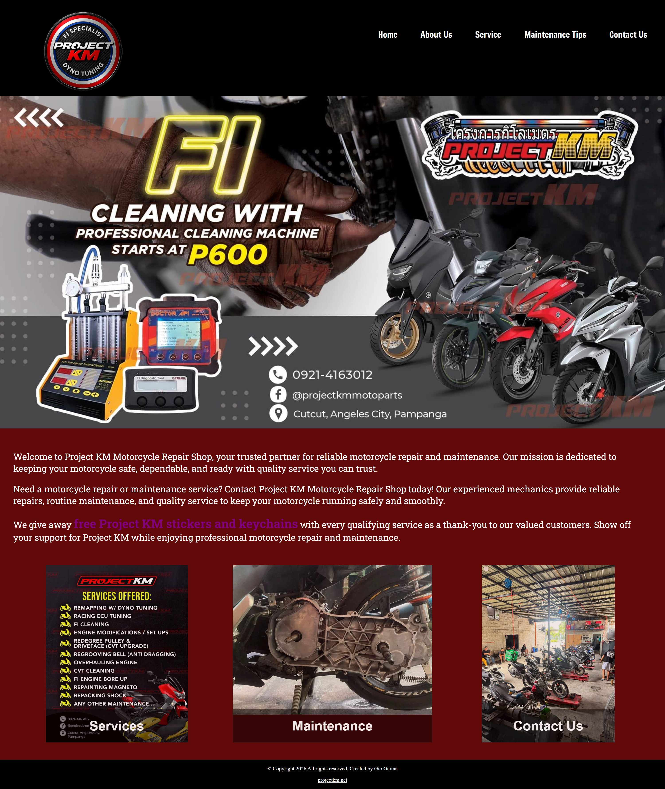
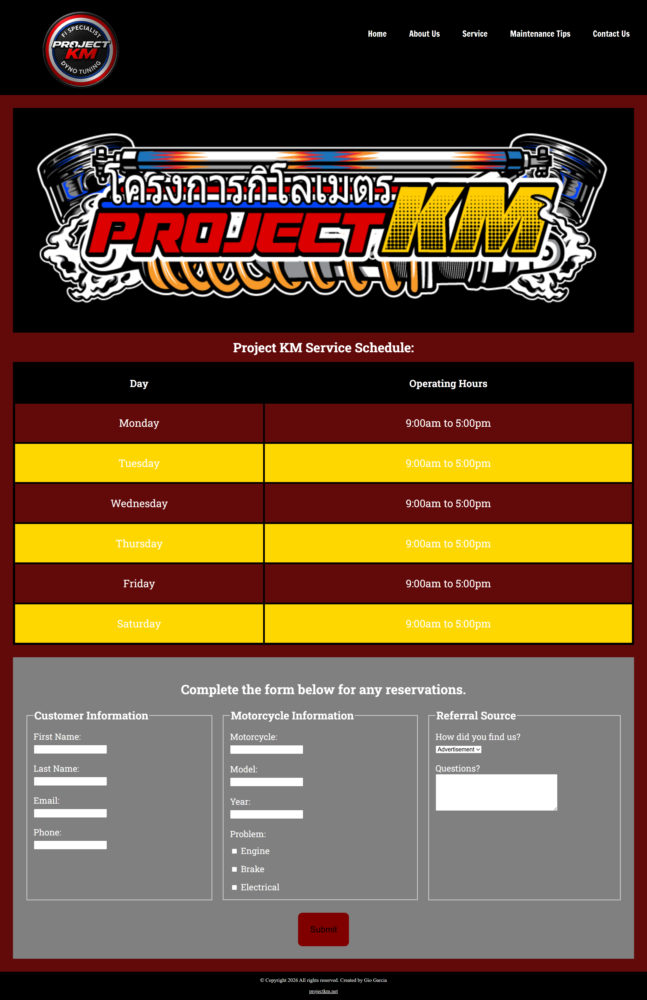
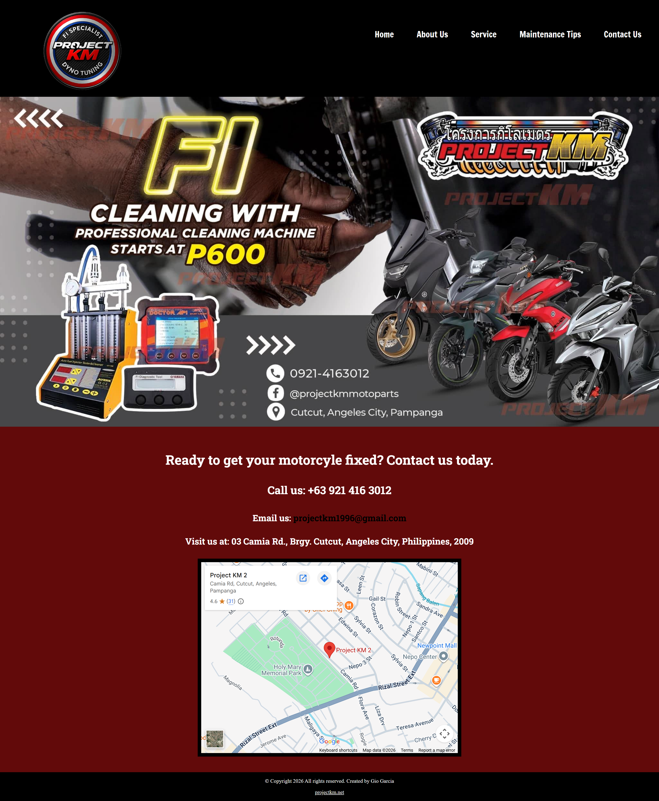
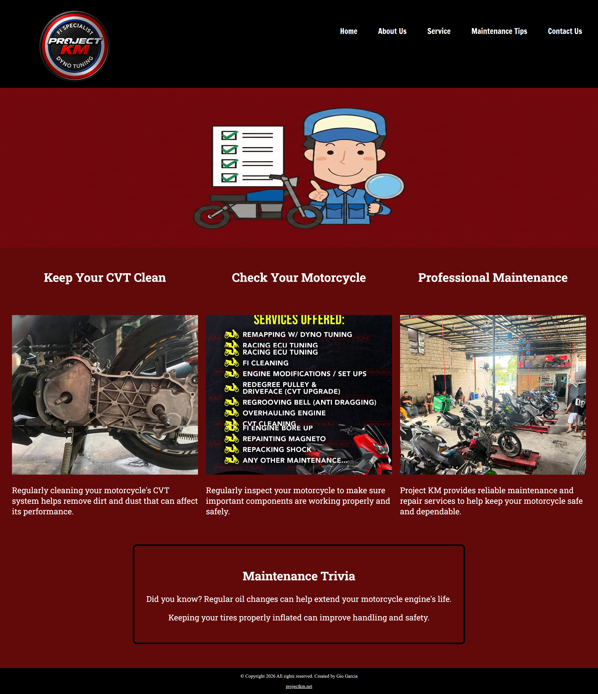

Case Study: Project KM – Motorcycle Repair Shop Website

Project Overview
Project KM Motorcycle Repair Shop is a website designed to provide information about motorcycle repair and maintenance services. The website gives customers an easy way to view the shop's services, learn about motorcycle maintenance, and find contact information.
Problem Addressed
The client needed a simple website where customers could easily find information about the motorcycle repair shop. Important details such as services, maintenance information, and contact details needed to be organized clearly.
Objectives
The main objective was to create a clear and user-friendly website for Project KM. The website was designed to organize the shop's information, make navigation simple, and provide customers with useful service and maintenance information.
Developer Role
I was responsible for planning, designing, and developing the website. I worked on the page layouts, navigation, content organization, styling, responsive design, and implementation of the website.
Technologies Used
HTML – Used to create the structure and content of the website.
CSS – Used to style the website, including colors, layouts, fonts, and responsive design.
Screenshots:
The website includes several pages such as:
- Home
- About
- Services
- Maintenance
- Contact




Development Decisions
I chose a dark color scheme with red and white accents which is aligned to the logo of the client. I also used consistent typography, spacing, and navigation across the pages to make the website easier to use. The content was organized into different pages so users could quickly find the information they needed.
Challenges Encountered
One of the challenges was creating a layout that worked across different screen sizes. I also had to organize the content and images properly while keeping the design consistent across all pages. Another challenge was making sure the navigation, images, and styles worked correctly when the website was published online.
Solution
I created a multi-page website with separate sections for the shop's services, maintenance information, background, and contact details. I also organized the website's CSS and image files so the project was easier to manage and update.
Results
The final result is a complete motorcycle repair shop website with multiple pages, consistent styling, service information, maintenance content, and contact details. The website provides a clear online presence for Project KM.
Lessons Learned
This project helped me improve my HTML and CSS skills and gave me more experience building a complete website instead of only working on individual pages. I also learned more about organizing files, designing layouts, making websites responsive, and using Git and GitHub to manage a project.